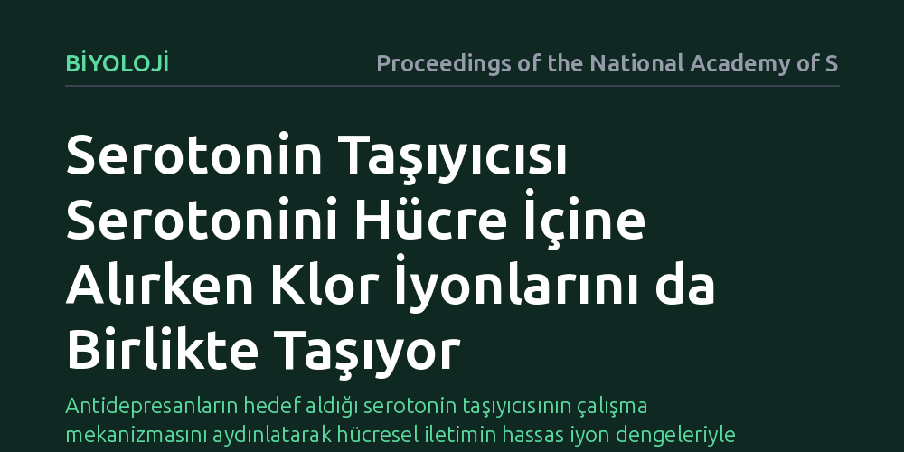

BIYOLOJI · Proceedings of the National Academy of Sciences · 2026-09-09
Araştırmacılar, yaygın antidepresanların hedefi olan serotonin taşıyıcısının serotonini geri alırken klor iyonlarını da birlikte taşıyıp taşımadığını inceledi. Çalışma, klor iyonlarının yalnızca yardımcı bir unsur olmadığını, serotoninle birlikte taşınarak temel mekanizmayı çalıştırdığını ortaya koydu.
Antidepresanların hedef aldığı serotonin taşıyıcısının çalışma mekanizmasını aydınlatarak hücresel iletimin hassas iyon dengeleriyle nasıl yönetildiğini gösteriyor.

Serotonin, sinir hücreleri arasında iletişimi sağlayan ve duygu durumundan uyku döngüsüne kadar birçok kritik süreci yöneten temel bir kimyasal habercidir. Sinir hücreleri arasındaki boşluğa salınan serotonin işini tamamladığında, iletinin sonlanabilmesi için oradan hızla uzaklaştırılması gerekir. Bu görevi hücre zarına yerleşik bir tulumba gibi çalışan serotonin taşıyıcısı üstlenir. Bu taşıyıcı protein aynı zamanda günümüzde yaygın olarak reçete edilen antidepresan ilaçların da birincil hedefidir.
Uzun yıllardır bu taşıyıcının görev yapabilmesi için ortamda klor iyonlarının bulunması gerektiği biliniyordu. Ancak klorun buradaki işlevi net değildi: İyon sadece proteinin yapısını dışarıdan kilitleyen bir anahtar mıydı, yoksa serotoninle beraber hücre içine mi aktarılıyordu? Bu sorunun cevapsız kalması, sinir sistemindeki temel bir taşıma mekanizmasının eksik anlaşılmasına yol açıyordu.
Araştırmacılar bu soruya yanıt bulabilmek için serotonin taşıyıcısının atomik mimarisini bilgisayar ortamında yüksek çözünürlükle modelleyerek inceledi. Moleküler dinamik simülasyonları yardımıyla su molekülleri, proteinin iç kanalları ve klor iyonunun taşıyıcıyla kurduğu bağlar adım adım takip edildi.
Protein boşluklarının kimyasal özellikleri analiz edilerek klorun izleyebileceği olası geçiş yolları haritalandı. Taşıyıcının hücre dışına ve hücre içine açık farklı yapısal durumları test edilerek, iyonun bağlanma noktasından sitoplazmaya doğru nasıl ilerlediği biyofiziksel veriler ışığında modellendi.
Elde edilen sonuçlar, klor iyonunun süreçte sadece dışarıda bekleyen bir yardımcı olmadığını gösterdi. Simülasyonlar, klorun serotonin ile birlikte proteinin iç kanalı boyunca hareket ettiğini ve hücre içine aktarıldığını ortaya koydu.
Taşıyıcı protein şekil değiştirerek içe açık konuma geçtiğinde, klorun bağlandığı cephede meydana gelen esneme iyonun sitoplazmaya salınmasını sağlıyor. Bu durum, klorun serotoninin taşınmasında bizzat eşlik eden bir yük olduğunu ve taşıyıcının elektriksel dengesini koruyarak döngüyü tamamladığını kanıtlıyor.
Bu bulgular, antidepresan ilaçların taşıyıcı üzerindeki etkilerini daha berrak bir çerçevede anlamayı mümkün kılıyor. Taşıyıcıyı kilitleyen veya durduran moleküllerin iyon bağlanma cepleriyle ilişkisini bilmek, gelecekte daha seçici bileşikler tasarlamak için temel bir zemin hazırlıyor.
Çalışma ayrıca biyolojik sistemlerde en küçük iyonların bile rastlantısal olmadığını hatırlatıyor. Beyindeki iletim dengesi, sadece büyük sinyal molekülleriyle değil, onlara eşlik eden temel iyonların atomik ölçekteki kusursuz uyumuyla sürdürülüyor.